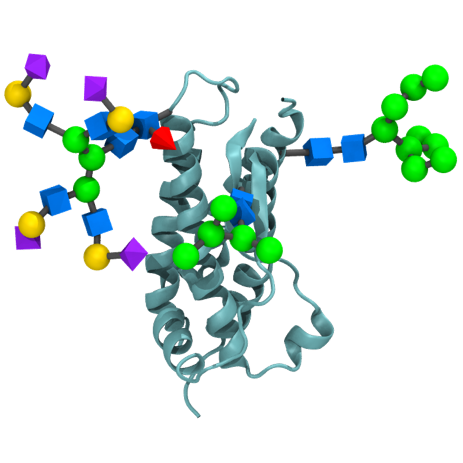

GlyGen's online library of resources for science in glycobiology.

Glycan

Protein

| Name | Resource | Description | Glycan | Protein | GlycoProtein |
|---|---|---|---|---|---|
| Database | CAZy | Description | - | - | - |
| Database | CSDB: Carbohydrate Structure Database | Description | - | - | - |
| Database | Glycomics@ExPASy | Description | - | - | - |
| Database | LipidBank | Description | - | - | - |
| Database | GlyConnect | Is a platform integrating sources of information to help characterise the molecular components of protein glycosylation. | - | - | - |
| Knowledgebase | CAYypedia | Description | - | - | - |
| Knowledgebase | Glycopedia | Description | - | - | - |
| Knowledgebase | UniCarbKB | Is a knowledge base for curated glycoconjugate information and their annotations. | - | - | - |
| Informatics Initiative | GLIC: Glycoinformatics Consortium | Description | - | - | - |
| Database/Tool | GlycoStore | Description | - | - | - |
| Data-processing Tool | GRITS Toolbox | Description | - | - | - |
| Tools | VirtualGlycome | Description | - | - | - |
| Integrated Databases | ACGG-DB | Description | - | - | - |
| Consortium/Inititative | MIRAGE | Description | - | - | - |
| Structure Repository | GlyTouCan | Is the international glycan structure repository. It assigns globally unique accession numbers to any submitted glycan. | Yes | - | - |
| Structure Repository | UniProt | Is a freely available, comprehensive resource of high quality protein sequences and functional annotations. | - | Yes | - |
| Name | Type | Description | Glycan | Protein | GlycoProtein |
|---|---|---|---|---|---|
| Essentials of Glycobiology | e-Book | Glycobiology is the study of the structure, biosynthesis, biology, and evolution of saccharides that are widely distributed in nature in all living life forms. | Yes | Yes | Yes |
| Glycan assembly | Video | Types of glycans found on human glycoproteins, and enzymatic glycan synthesis. | Yes | - | - |
| Glycans | Video | Where are glycans and what do they do? | Yes | - | - |
| Inner Life of the Cell | Video | Full version of inner life of the cell, narrated. | Yes | - | - |
| Biochemistry | Video | Introduction to Proteins | - | Yes | - |
| Tools for Glycoprotein analysis | Video | This tutorial introduces the function N- and O-glycans, and discusses enzymes used in deglycosylation. | - | - | Yes |
| Tools for Glycoprotein analysis | Video | NDSU Virtual Cell Animations Project animation 'Protein Modification (Golgi)'. | - | - | Yes |